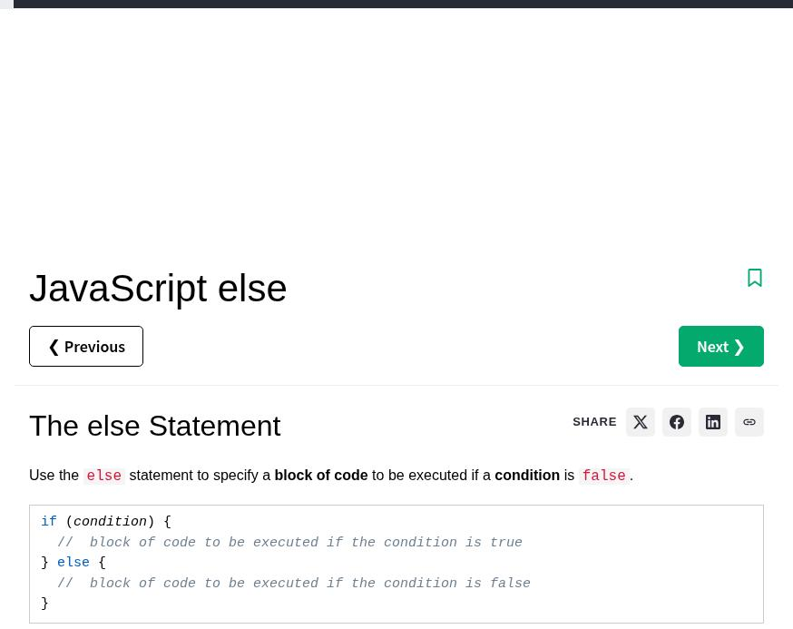
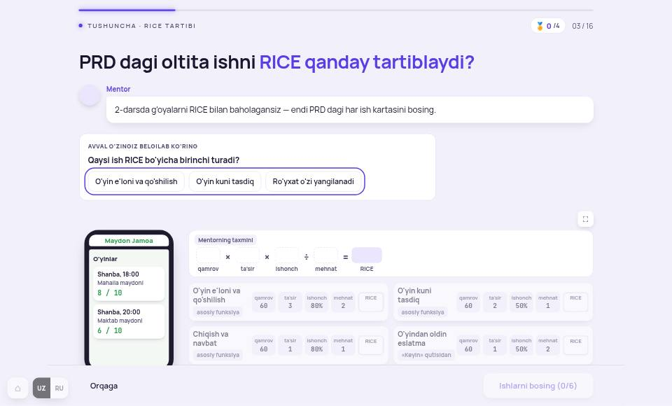
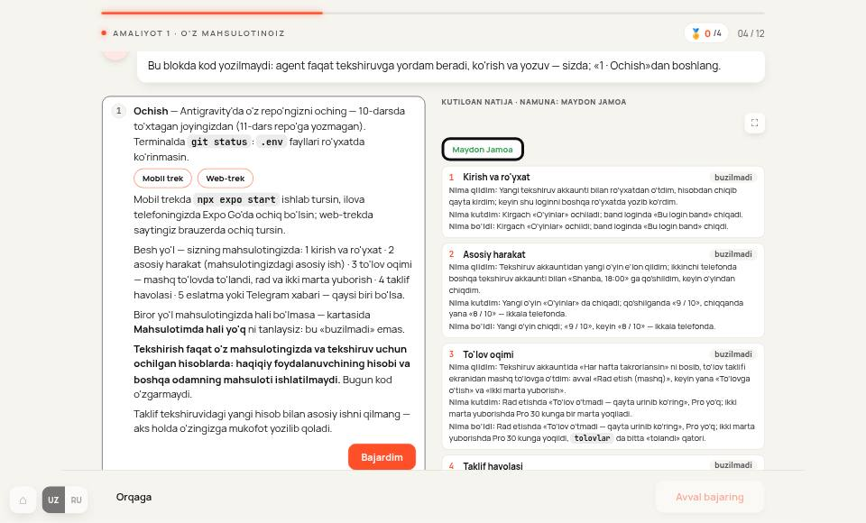
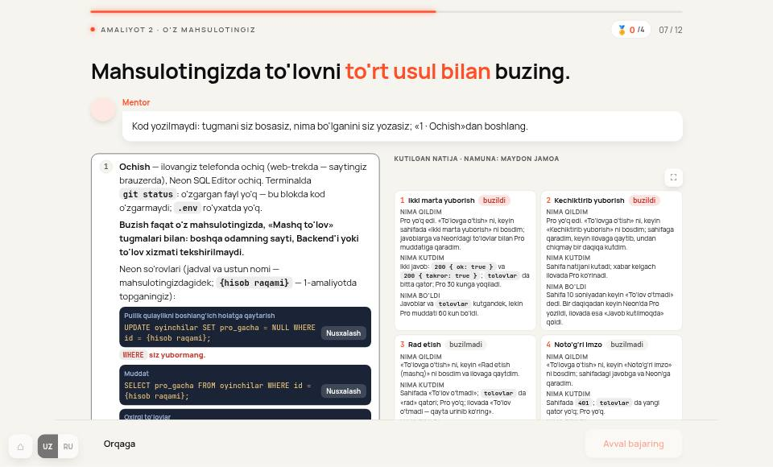
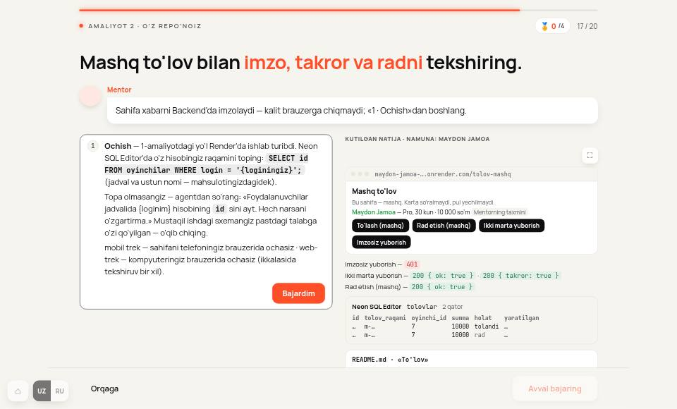
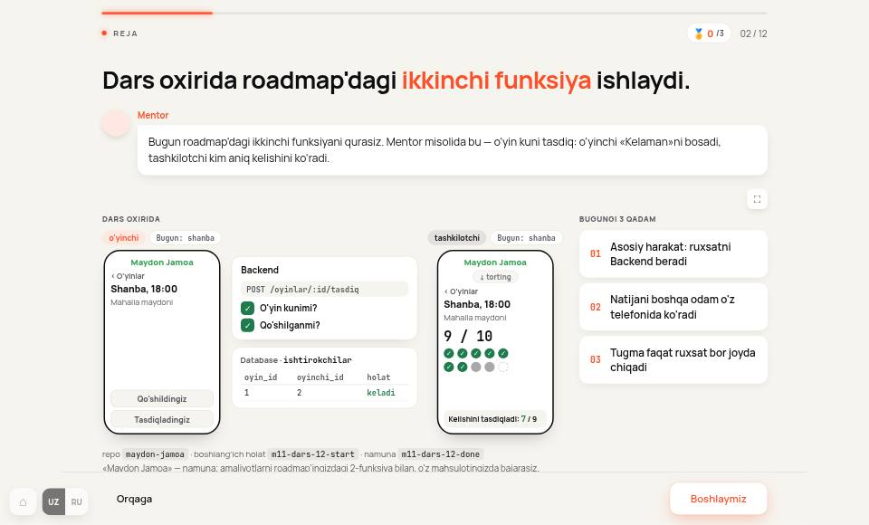
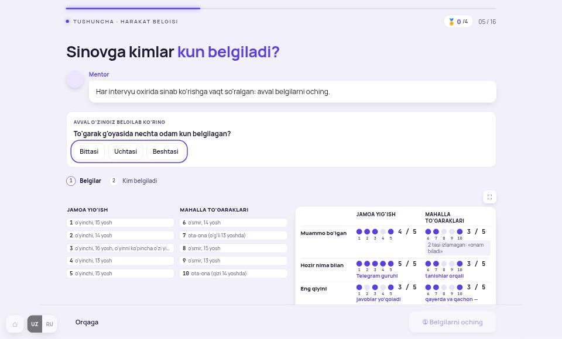
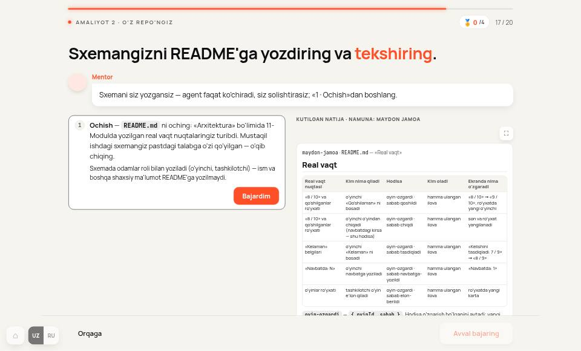
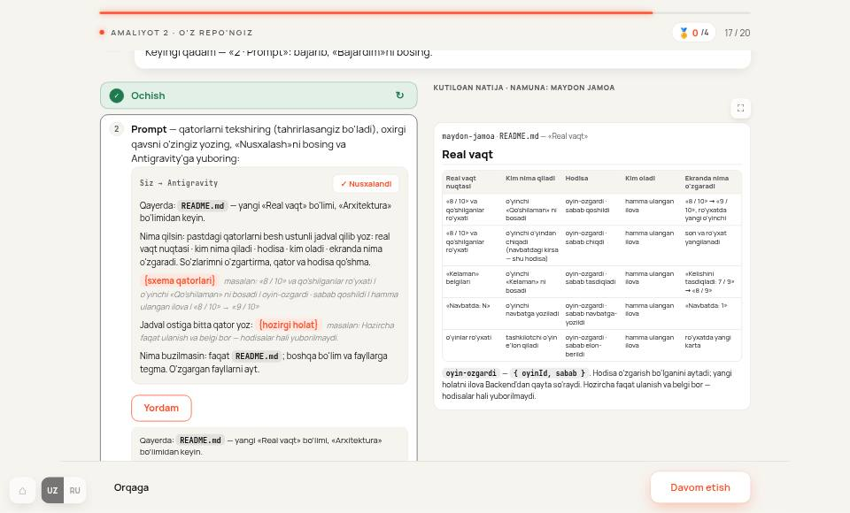

To'rtta ta'lim platformasi bitta ekranni qanday tuzishi va 7–14-Modulning har bir ekrani hozir qanday ekani. Dars fayllariga tegilmadi: ekranlar lokal saytda ochilib o'lchandi. Oxirida 1-bosqich (standart) uchun xomaki chegaralar bor, ular hali qaror emas.
| Naqsh | w3schools | Codecademy | Brilliant | Khan |
|---|---|---|---|---|
| Ekranda bitta g'oya, qisqa izoh | 1–5 jumla | ≤ 250 so'z, sarlavha ≤ 5 so'z | «bitta tushuncha», qisqa bloklar | bitta tushuncha — 3 qadam |
| Izohdan keyin darhol harakat | «Try it Yourself» | har mashqda ish maydoni + checkpoint | har qadamda savol | kod o'qish → mashq → loyiha |
| Bosilganda nima bo'ladi | kod ishlaydi | kod tekshiriladi | chizma harakatlanib natijani ko'rsatadi | avtomatik tekshiruv |
| Yordam | «Show Answer» | yashirin, yechimni bermaydi | maslahat, izoh | qadam-baqadam ko'rsatma |
| Emoji / undov | yo'q | undov o'rniga nuqta | — | — |
| Dars hajmi | — | 6 mashq × 3–5 daqiqa | 5–15 daqiqa | — |
Manbalar: w3schools (o'zim ochib ko'rdim) · Codecademy o'quv dasturi standartlari (curriculum-documentation.codecademy.com) · brilliant.org va beginnersinai.org sharhi · Khan Academy blogi. Brilliant, Codecademy va Khan darslari to'g'ridan-to'g'ri ko'rilmadi (kirishsiz ochilmaydi): ular bo'yicha faqat o'zlari e'lon qilgan qoidalar va sharhlar ishlatildi, «—» katakchalarni tekshirib bo'lmadi. Akkaunt orqali suratlar kelsa, jadval yangilanadi.
102 dars, 1 280×773 ekranda. Quyidagi raqamlar «o'quv» ekranlari bo'yicha ( ta). Test, podium, kartochka va Yakun ekranlari kirmagan.
«Bos → matn»: ekranda nav'dan tashqari 3 tagacha tugma bosildi va natijada faqat matn qo'shildi (8 so'zdan ko'p), input ham, sudrash ham paydo bo'lmadi. Asosan «tushuncha» (172), «kirish» (80) va amaliyot (59) ekranlari.
| Modul | O'quv ekran | So'z (median) | Matn bloki | Mayda yozuv | Ekranda rang | Emoji (dars matni) | Bos → matn |
|---|

w3schools · JavaScript else — sarlavha, bitta jumla, kod qutisi, «Try it». Ikki xil tugma: konturli «Previous», to'liq rangli «Next».
m9-06 · 3/16 «PRD dagi oltita ishni RICE qanday tartiblaydi?» — 152 so'z, 17 blok, 74 mayda yozuv.
m11-12 · 4/12 — 523 so'z, 43 blok, 56 mayda yozuv (amaliyot)
m11-05 · 7/12 — 397 so'z, 36 blok, 63 mayda yozuv
m11-03 · 17/20 — 265 so'z, 35 blok, 63 mayda yozuv
m9-12 · 2/12 — 118 so'z, 15 blok, 39 mayda yozuv, 10 emoji
m9-04 · 5/16 — 155 so'z, 22 blok, 66 mayda yozuv
m10-02 · 17/20, oldin — 201 so'z
keyin — 435 so'z: bosish yangi matn bloklarini ochdiTadqiqotdagi naqshlar va o'lchovdan chiqqan taklif. Qaror 1-bosqichda (standart hujjati bilan) olinadi.
| O'lchov (bitta o'quv ekrani) | Hozir: median | Hozir: 90% | Taklif | Asos |
|---|